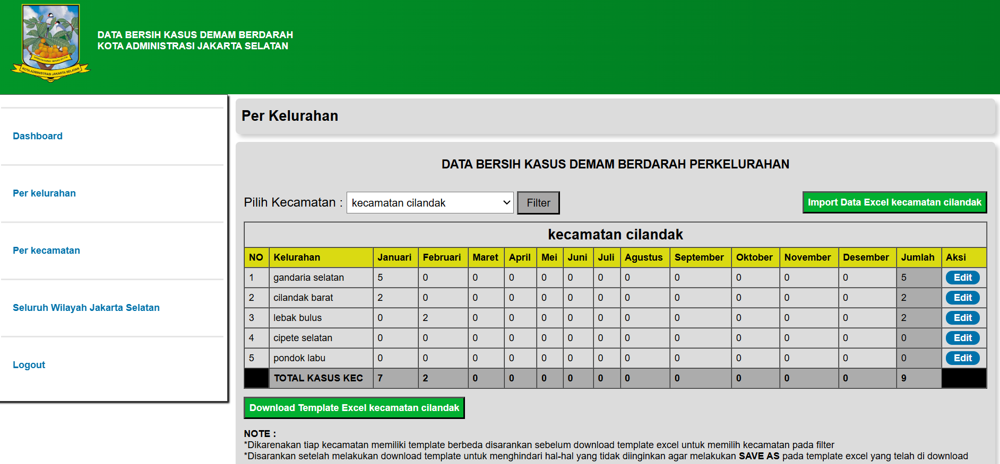
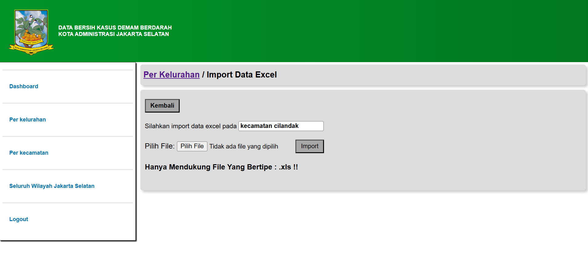
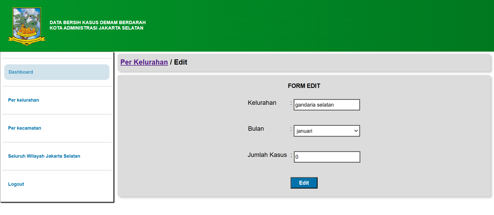
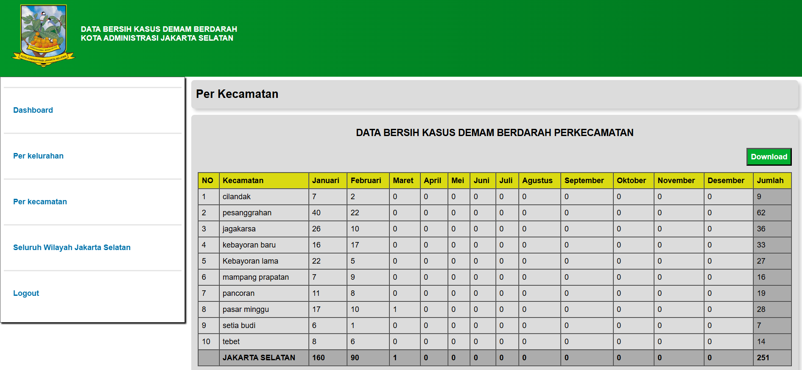
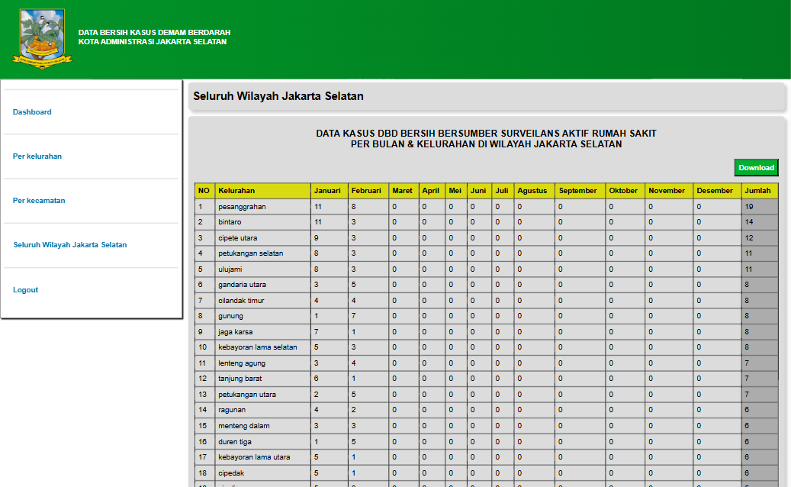
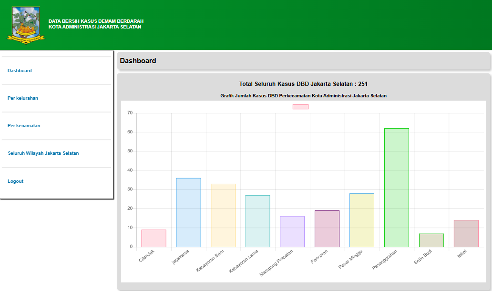

Web Developer Project
Penyakit Demam Berdarah Dengue (DBD) merupakan salah satu penyakit endemik di Indonesia yang memerlukan pencatatan dan pelaporan kasus secara akurat dan cepat. Sistem ini dikembangkan untuk membantu petugas atau instansi terkait dalam mencatat, memantau, dan mengelola data kasus DBD secara digital untuk meningkatkan efisiensi monitoring dan pengambilan keputusan.
Sistem ini memungkinkan pengguna untuk mengimportkan data kasus dbd perkecamatan atau perkelurahan, mengelola data laporan dan menampilkannya dalam bentuk grafik/statistik, menghasilkan laporan dalam bentuk pdf.





